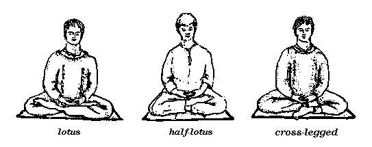
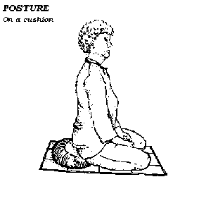
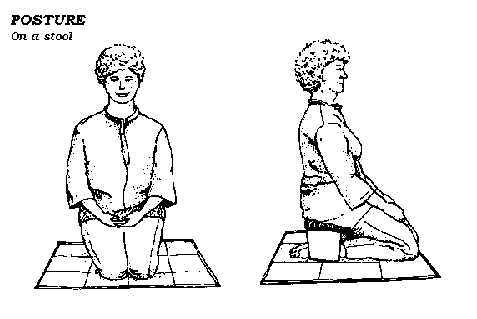

The aim of this booklet is to serve as an introduction to the practice of Insight Meditation as taught within the tradition of Theravada Buddhism. You need not be familiar with the teachings of the Buddha to make use of it, although such knowledge can help to clarify any personal understanding you may develop through meditation.
The purpose of Insight Meditation is not to create a system of beliefs, but rather to give guidance on how to see clearly into the nature of the mind. In this way one gains first-hand understanding of the way things are, without reliance on opinions or theories -- a direct experience, which has its own vitality. It also gives rise to the sense of deep calm that comes from knowing something for oneself, beyond any doubt.
Insight Meditation is a key factor in the path that the Buddha offered for the welfare of human beings; the only criterion is that one has to put it into practice! These pages, therefore, describe a series of meditation exercises, and practical advice on how to use them. It works best if the reader follows the guide progressively, giving each sequence of instructions a good work-out before proceeding further.
The term "Insight Meditation" (samatha-vipassana) refers to practices for the mind that develop calm (samatha) through sustained attention, and insight (vipassana) through reflection. A fundamental technique for sustaining attention is focusing awareness on the body; traditionally, this is practised while sitting or walking. The guide begins with some advice on this.
Reflection occurs quite naturally afterwards, when one is "comfortable" within the context of the meditation exercise. There will be a sense of ease and interest, and one begins to look around and become acquainted with the mind that is meditating. This "looking around" is called contemplation, a personal and direct seeing that can only be suggested by any technique. A few ideas and guidance on this come in a later section.
(It should be noted that knowledge of terms in Pali -- the canonical language of Theravada Buddhism -- is not necessary to begin the practice of meditation. It can be useful, however, to provide reference points to the large source of guidance in the Theravada Canon, as well as to the teaching of many contemporary masters who still find such words more precise than their English equivalents.)
1. Sustaining Attention
SITTING
Time and Place
Focusing the mind on the body can be readily accomplished while sitting. You need to find a time and a place which affords you calm and freedom from disturbance.
A quiet room with not much in it to distract the mind is ideal; a setting with light and space has a brightening and clearing effect, while a cluttered and gloomy room has just the opposite. Timing is also important, particularly as most people's days are quite structured with routines. It is not especially productive to meditate when you have something else to do, or when you're pressed for time. It's better to set aside a period -- say, in the early morning or in the evening after work -- when you can really give your full attention to the practice. Begin with fifteen minutes or so. Practise sincerely with the limitations of time and available energy, and avoid becoming mechanical about the routine. Meditation practice, supported by genuine willingness to investigate and make peace with oneself, will develop naturally in terms of duration and skill.
Awareness of the body
The development of calm is aided by stability, and by a steady but peaceful effort. If you can't feel settled, there's no peacefulness; if there's no sense of application, you tend to day-dream. One of the most effective postures for the cultivation of the proper combination of stillness and energy is sitting.
Use a posture that will keep your back straight without strain. A simple upright chair may be helpful, or you may be able to use one of the lotus postures (See the " Notes on Posture"). These look awkward at first, but in time they can provide a unique balance of gentle firmness that gladdens the mind without tiring the body.
If the chin is tilted very slightly down this will help, but do not allow the head to loll forward as this encourages drowsiness. Place the hands on your lap, palms upwards, one gently resting on the other with the thumb-tips touching. Take your time, and get the right balance.
Now, collect your attention, and begin to move it slowly down your body. Notice the sensations. Relax any tensions, particularly in the face, neck and hands. Allow the eyelids to close or half close.
Investigate how you are feeling. Expectant or tense? Then relax your attention a little. With this, the mind will probably calm down, and you may find some thoughts drifting in -- reflections, daydreams, memories, or doubts about whether you are doing it right! Instead of following or contending with these thought patterns, bring more attention to the body, which is a useful anchor for a wandering mind.
Cultivate a spirit of inquiry in your meditation attitude. Take your time. Move your attention, for example, systematically from the crown of the head down over the whole body. Notice the different sensations -- such as warmth, pulsing, numbness, and sensitivity -- in the joints of each finger, the moisture of the palms, and the pulse in the wrist. Even areas that may have no particular sensation, such as the forearms or the earlobes, can be "swept over" in an attentive way. Notice how even the lack of sensation is something the mind can be aware of. This constant and sustained investigation is called mindfulness (sati) and is one of the primary tools of Insight Meditation.
Mindfulness of breathing (anapanasati)
Instead of "body sweeping", or after a preliminary period of this practice, mindfulness can be developed through attention on the breath.
First, follow the sensation of your ordinary breath as it flows in through the nostrils and fills the chest and abdomen. Then try maintaining your attention at one point, either at the diaphragm or -- a more refined location -- at the nostrils. Breath has a tranquillising quality, steady and relaxing if you don't force it; this is helped by an upright posture. Your mind may wander, but keep patiently returning to the breath.
It is not necessary to develop concentration to the point of excluding everything else except the breath. Rather than to create a trance, the purpose here is to allow you to notice the workings of the mind, and to bring a measure of peaceful clarity into it. The entire process -- gathering your attention, noticing the breath, noticing that the mind has wandered, and re-establishing your attention -- develops mindfulness, patience and insightful understanding. So don't be put off by apparent "failure" -- simply begin again. Continuing in this way allows the mind eventually to calm down.
If you get very restless or agitated, just relax. Practise being at peace with yourself, listening to -- without necessarily believing in -- the voices of the mind.
If you feet drowsy, then put more care and attention into your body and posture. Refining your attention or pursuing tranquillity at such times will only make matters worse!
WALKING AND STANDING
Many meditation exercises, such as the above "mindfulness of breathing", are practised while sitting. However, walking is commonly alternated with sitting as a form for meditation. Apart from giving you different things to notice, it's a skilful way to energise the practice if the calming effect of sitting is making you dull.
If you have access to some open land, measure off about 25-30 paces' length of level ground (or a clearly defined pathway between two trees), as your meditation path. Stand at one end of the path, and compose your mind on the sensations of the body. First, let the attention rest on the feeling of the body standing upright, with the arms hanging naturally and the hands lightly clasped in front or behind. Allow the eyes to gaze at a point about three metres in front of you at ground level, thus avoiding visual distraction. Now, walk gently, at a deliberate but "normal" pace, to the end of the path. Stop. Focus on the body standing for the period of a couple of breaths. Turn, and walk back again. While walking, be aware of the general flow of physical sensations, or more closely direct your attention to the feet. The exercise for the mind is to keep bringing its attention back to the sensation of the feet touching the ground, the spaces between each step, and the feelings of stopping and starting.
Of course, the mind will wander. So it is important to cultivate patience, and the resolve to begin again. Adjust the pace to suit your state of mind -- vigorous when drowsy or trapped in obsessive thought, firm but gentle when restless and impatient. At the end of the path, stop; breathe in and out; "let go" of any restlessness, worry, calm, bliss, memories or opinions about yourself. The "inner chatter" may stop momentarily, or fade out. Begin again. In this way you continually refresh the mind, and allow it to settle at its own rate.
In more confined spaces, alter the length of the path to suit what is available. Alternatively, you can circumambulate a room, pausing after each circumambulation for a few moments of standing. This period of standing can be extended to several minutes, using "body sweeping".
Walking brings energy and fluidity into the practice, so keep your pace steady and just let changing conditions pass through the mind. Rather than expecting the mind to be as still as it might be while sitting, contemplate the flow of phenomena. It is remarkable how many times we can become engrossed in a train of thought -- arriving at the end of the path and "coming to" with a start! -- but it is natural for our untrained minds to become absorbed in thoughts and moods. So instead of giving in to impatience, learn how to let go, and begin again. A sense of ease and calm may then arise, allowing the mind to become open and clear in a natural, unforced way.
LYING DOWN
Reclining at the end of a day, spend a few minutes meditating while lying on one side. Keep the body quite straight and bend one arm up so that the hand acts as a support for the head. Sweep through the body, resting its stresses; or collect your attention on the breath, consciously putting aside memories of the day just past and expectations of tomorrow. In a few minutes, with your mind clear, you'll be able to rest well.
CULTIVATING THE HEART
Cultivating good-will (metta) gives another dimension to the practice of Insight. Meditation naturally teaches patience and tolerance, or at least it shows the importance of these qualities. So you may well wish to develop a more friendly and caring attitude towards yourself and other people. In meditation, you can cultivate good-will very realistically.
Focus attention on the breath, which you will now be using as the means of spreading kindness and good-will. Begin with yourself, with your body. Visualise the breath as a light, or see your awareness as being a warm ray, and gradually sweep it over your body. Lightly focus your attention on the centre of the chest, around the heart region. As you breathe in, direct patient kindness towards yourself, perhaps with the thought, "May I be well", or "Peace". As you breathe out, let the mood of that thought, or the awareness of light, spread outwards from the heart, through the body, through the mind, and beyond yourself. "May others be well."
If you are experiencing negative states of mind, breathe in the qualities of tolerance and forgiveness. Visualising the breath as having a healing colour may be helpful. On the out-breath, let go -- of any stress, worry or negativity -- and extend the sense of release through the body, the mind, and beyond, as before.
This practice can form all or part of a period of meditation -- you have to judge for yourself what is appropriate. The calming effect of meditating with a kindly attitude is good for beginning a sitting, but there will no doubt be times to use this approach for long periods, to go deeply into the heart.
Always begin with what you are aware of, even if it seems trivial or confused. Let your mind rest calmly on that -- whether it's boredom, an aching knee, or the frustration of not feeling particularly kindly. Allow these to be; practise being at peace with them. Recognise and gently put aside any tendencies towards laziness, doubt or guilt.
Peacefulness can develop into a very nourishing kindness towards yourself, if you first of all fully accept the presence of what you dislike. Keep the attention steady, and open the heart to whatever you experience. This does not imply approval of negative states, but allows them a space wherein they can come and go.
Generating good-will toward the world beyond yourself follows much the same pattern. A simple way to spread kindness is to work in stages. Start with yourself, joining the sense of loving acceptance to the movement of the breath. "May I be well." Then, reflect on people you love and respect, and wish them well, one by one. Move on to friendly acquaintances, then to those towards whom you feel indifferent. "May they be well." Finally, bring to mind those people you fear or dislike, and continue to send out wishes of good-will.
This meditation can expand, in a movement of compassion, to include all people in the world, in their many circumstances. And remember, you don't have to feel that you love everyone in order to wish them well!
Kindness and compassion originate from the same source of good will, and they broaden the mind beyond the purely personal perspective. If you're not always trying to make things go the way you want them to; if you're more accepting and receptive to yourself and others as they are, compassion arises by itself. Compassion is the natural sensitivity of the heart.
2. Reflection
CHOICELESS AWARENESS
Meditation can also proceed without a meditation object, in a state of pure contemplation, or "choiceless awareness".
After calming the mind by one of the methods described above, consciously put aside the meditation object. Observe the flow of mental images and sensations just as they arise, without engaging in criticism or praise. Notice any aversion and fascination; contemplate any uncertainty, happiness, restlessness or tranquillity as it arises. You can return to a meditation object (such as the breath). whenever the sense of clarity diminishes, or if you begin to feel overwhelmed by impressions. When a sense of steadiness returns, you can relinquish the object again.
This practice of "bare attention" is well-suited for contemplating the mental process. Along with observing the mind's particular "ingredients", we can turn our attention to the nature of the container. As for the contents of the mind, Buddhist teaching points especially to three simple, fundamental characteristics.
First, there is changeability (anicca) - the ceaseless beginning and ending all things go through, the constant movement of the content of the mind. This mind-stuff may be pleasant or unpleasant, but it is never at rest.
There is also a persistent, often subtle, sense of dissatisfaction (dukkha). Unpleasant sensations easily evoke that sense, but even a lovely experience creates a tug in the heart when it ends. So at the best of moments there is still an inconclusive quality in what the mind experiences, a somewhat unsatisfied feeling.
As the constant arising and passing of experiences and moods become familiar, it also becomes clear that -- since there is no permanence in them -- none of them really belong to you. And, when this mind-stuff is silent -- revealing a bright spaciousness of mind -- there are no purely personal characteristics to be found! This can be difficult to comprehend, but in reality there is no "me" and no "mine"-- the characteristic of "no-self", or impersonality (anatta).
Investigate fully and notice how these qualities pertain to all things, physical and mental. No matter if your experiences are joyful or barely endurable, this contemplation will lead to a calm and balanced perspective on your life.
CONTEMPLATING YOUR PRACTICE
These meditation exercises all serve to establish awareness of things as they are. By bringing your mind fully onto experiences, you will notice more clearly the state of the mind itself -- for example, whether you are being lazy or over-eager in your practice. With a little honest appraisal, it becomes evident that the quality of the meditation practice depends, not on the exercise being used, but on what you are putting into it. Reflecting in this way, you will gain deeper insight into your personality and habits.
There are some useful points to bear in mind whenever you meditate. Consider whether you are beginning afresh each time -- or even better, with each breath or footstep. If you don't practise with an open mind, you may find yourself trying to recreate a past insight, or unwilling to learn from your mistakes. Is there the right balance of energy whereby you are doing all that you can without being over-forceful? Are you keeping in touch with what is actually happening in your mind, or using a technique in a dull, mechanical way? As for concentration, it's good to check whether you are putting aside concerns that are not immediate, or letting yourself meander in thoughts and moods. Or, are you trying to repress feelings without acknowledging them and responding wisely?
Proper concentration is that which unifies the heart and mind. Reflecting in this way encourages you to develop a skilful approach. And of course, reflection will show you more than how to meditate: it will give you the clarity to understand yourself.
Remember, until you've developed some skill and case with meditation, it's best to use a meditation object, such as the breath, as a focus for awareness and as an antidote for the overwhelming nature of the mind's distractions. Even so, whatever your length of experience with the practice, it is always helpful to return to awareness of the breath or body. Developing this ability to begin again leads to stability and case. With a balanced practice, you realise more and more the way the body and mind are, and see how to live with greater freedom and harmony. This is the purpose and the fruit of Insight Meditation.
LIVING INSIGHTFULLY
With the practice of Insight Meditation you will see your attitudes more clearly, and come to know which are helpful and which create difficulties. An open attitude can make even unpleasant experiences insightful -- for instance, understanding the way that the mind reacts against pain or sickness. When you approach such experiences in this way, you can often unwind the stress and resistance to pain, and alleviate it to a great degree. On the other hand, an impatient streak will have different results: becoming annoyed with others if they disturb your meditation; being disappointed if your practice doesn't seem to be progressing fast enough; falling into unpleasant moods over insignificant matters. Meditation teaches us that peace of mind -- or its absence -- essentially depends on whether or not we contemplate the events of life in a spirit of reflection and open-mindedness.
By looking into your intentions and attitudes in the quiet of meditation, you can investigate the relationship between desire and dissatisfaction. See the causes of discontent: wanting what you don't have; rejecting what you dislike; being unable to keep what you want. This is especially oppressive when the subject of the discontent and desire is yourself. No-one finds it easy to be at peace with personal weakness, especially when so much social emphasis is placed on feeling good, getting ahead and having the best. Such expectations indeed make it difficult to accept oneself as one is.
However, with the practice of insight meditation, you discover a space in which to stand back a little from what you think you are, from what you think you have. Contemplating these perceptions, it becomes clearer that you don't have any thing as "me" or "mine"; there are simply experiences, which come and go through the mind. So if, for example, you're looking into an irritating habit, rather than becoming depressed by it, you don't reinforce it and the habit passes away. It may come back again, but this time it's weaker, and you know what to do. Through cultivating peaceful attention, mental content calms down and may even fade out, leaving the mind clear and refreshed. Such is the ongoing path of insight.
To be able to go to a still centre of awareness within the changing flow of daily life is the sign of a mature practice, for insight deepens immeasurably when it is able to spread to all experience. Try to use the perspective of insight no matter what you are doing -- routine housework, driving the car, having a cup of tea. Collect the awareness, rest it steadily on what you are doing, and rouse a sense of inquiry into the nature of the mind in the mist of activity. Using the practice to centre on physical sensations, mental states, or eye-, ear- or nose-consciousness can develop an ongoing contemplation that turns mundane tasks into foundations for insight.
Centred more and more in awareness, the mind becomes free to respond skilfully to the moment, and there is greater harmony in life. This is the way that meditation does "social work"-- by bringing awareness into your life, it brings peace into the world. When you can abide peacefully with the great variety of feelings that arise in consciousness, you are able to live more open[y with the world, and with yourself as you are.
3. Further Suggestions
PERSONAL CONDUCT
As our insight deepens, we see more clearly the results of our actions -- the peace that good intention, sincerity and clear-mindedness promote, and the trouble that confusion and carelessness create. It is this greater sensitivity, observing in particular the distress we cause ourselves and others, that often inspires us to want to live more wisely. For true peace of mind, it is indispensable that formal meditation be combined with a commitment to responsibility, and with care for oneself and others.
There is really nothing mysterious about the path of Insight. In the words of the Buddha, the way is simple: "Do good, refrain from doing evil, and purify the mind". It is a long-observed tradition, then, for people who engage in spiritual practice to place great importance on proper conduct. Many meditators undertake realistic moral vows -- such as refraining from harming living beings, from stealing, from careless use of sexuality, from using intoxicants (alcohol and drugs), and from gossip and other graceless speech habits -- to help their own inner clarity, and perhaps gently encourage that of others.
COMPANY AND ROUTINE
Meditating with a few friends at regular times can be a great support towards constancy of practice and development of wisdom. The solitary meditator eventually faces diminishing will-power, as there's often something else to do that seems more important (or more interesting) than watching the breath. Regular group meditation for an agreed-upon duration keeps the participants going, regardless of their flux of moods. (The investigation of these shifts of disposition often yields important insights, but on our own we can find it difficult to persevere with them.) As well as seeing the personal benefits, you can reflect that your efforts are helping others to keep practising.
NOTES ON POSTURE
The ideal is an upright, alert posture. Slumping only increases the pressure on the legs and discomfort in the back. It is important to attend to your posture with wisdom, not insensitive will-power! Posture will improve in time, but you need to work with the body, not use force against it.
Check your posture:
- Are the hips leaning back? This will cause a slump.
- The small of the back should have its natural, unforced curve so that the abdomen is forward and "open".
- Imagine that someone is gently pushing between the shoulder blades, while keeping the muscles relaxed. This will give you an idea of whether you unconsciously "hunch" your shoulders (and hence close your chest).
- Note, and gently release, any tension in the neck/shoulder region.
If your posture feels tense or stack:
- Allow the spine to straighten by imagining the crown of the head as suspended from above. This also lets the chin tuck in slightly.
- Keep the arms light and held back against the abdomen. If they are forward, they pull you out of balance.
- Use a small firm cushion underneath and toward the back of the buttocks to support the angle of the hips.
For the legs:
- Practise some stretching exercises (like touching the toes with both legs stretched out, while sitting).
- If you have a lot of pain during a period of sitting, change posture, sit on a small stool or chair, or stand up for a while.
- If you usually (or wish to) sit on or near the floor, experiment with cushions of different size and firmness, or try out one of the special meditation stools that are available.
For drowsiness:
- Try meditating with your eyes open.
- "Sweep" your attention systematically around your body.
- Focus on the whole body and on physical sensations, rather than on a subtle object like the breath.
- Stand up and walk mindfully for a while in the open air.
For tension or headaches:
- You may be trying too hard -- this is not unusual! -- so lighten your concentration. For instance, you might move your attention to the sensation of the breath at the abdomen.
- Generate the energy of good-will (see the section on "Cultivating the Heart"), and direct it towards the area of tension.
- Visualising and spreading light through the body can be helpful in alleviating its aches and pains. Try actually focusing a benevolent light on an area of difficulty!
 This is not a comprehensive or exclusive guide, but a suggested outline for practice. Meditators are strongly recommended to seek a trustworthy and experienced "spiritual friend" or teacher for ongoing advice.
May all beings be at peace;
May all beings be freed from sufferingNote: This booklet was originally published in 1988 by Amaravati Buddhist Centre, UK, for free distribution. It was subsequently reprinted by the Buddhist Society of Western Australia in 1997. Contact addresses:
- Amaravati Buddhist Centre
Great Gaddesden. Hemel Hempstead
Hertfordshire. HP1-3PZ. U.K.
- Dhammaloka Buddhist Centre
18 Nanson Way
Nollamara. WA 6020. AUSTRALIA
Special thanks to Phat-Tan Nguyen (Quebec, Canada) for his kind assistance in scanning the original document.